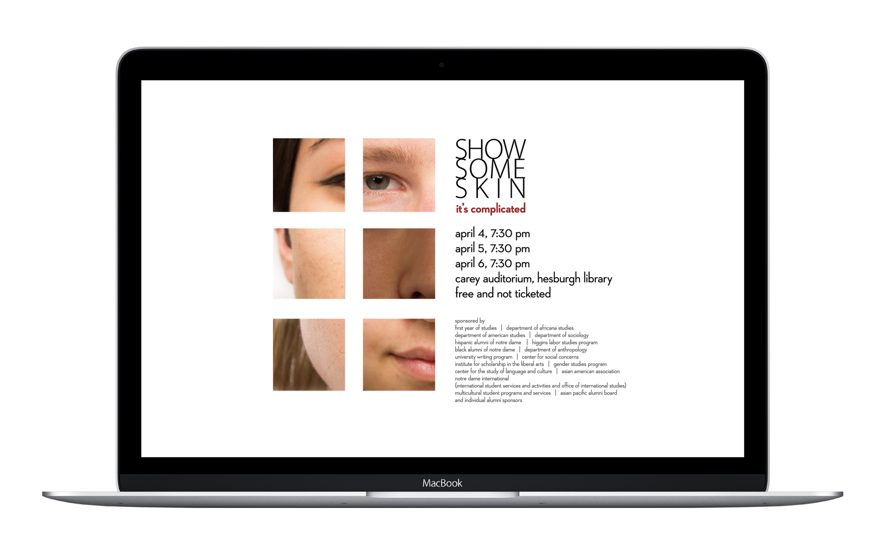

Show Some Skin is an annual theatrical production at the University of Notre Dame. We collect anonymous monologues from students and perform them on-stage to shed light on the hidden diversity at Notre Dame. For 2013 – 2015, I am in charge of its concept and print design.
Posters for Show Some Skin, 2013 – 2015
Notre Dame is a largely homogeneous community: 75% of all students are white, over 80% Catholic, and 93% from the United States. Here, voices of the minority are rarely heard, and people in the majority also have unique stories that show they’re more complex than the “white Catholic” label. Show Some Skin provides a platform for everyone to tell their stories, and encourages us to understand each other more deeply.
 Supplementary computer wallpaper campaign in 2013
Over three years, I experimented with different ways of working with photos, type, and whitespace. With extensive whitespace, these posters are dramatic, different, and attention grabbing, while directing viewers’ attention to the text and visual at the same time. These concepts are different yet similar, providing a sense of familiarity despite the very different themes each year.
A detailed explanation of my ideation for the 2014 campaign, Be Bold, can be found on Behance.